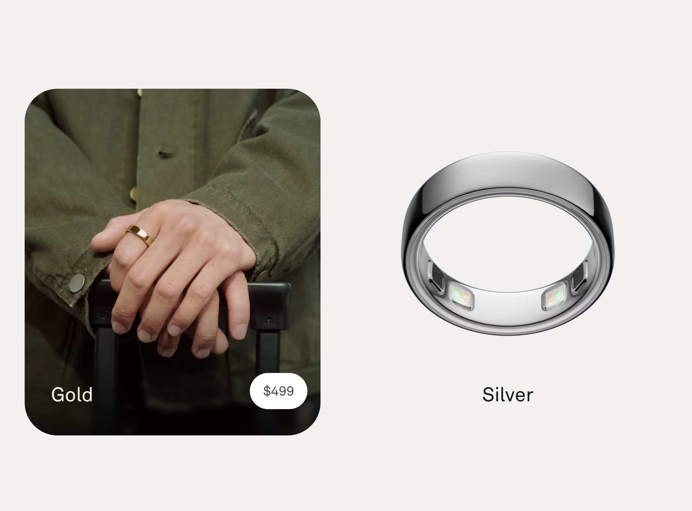
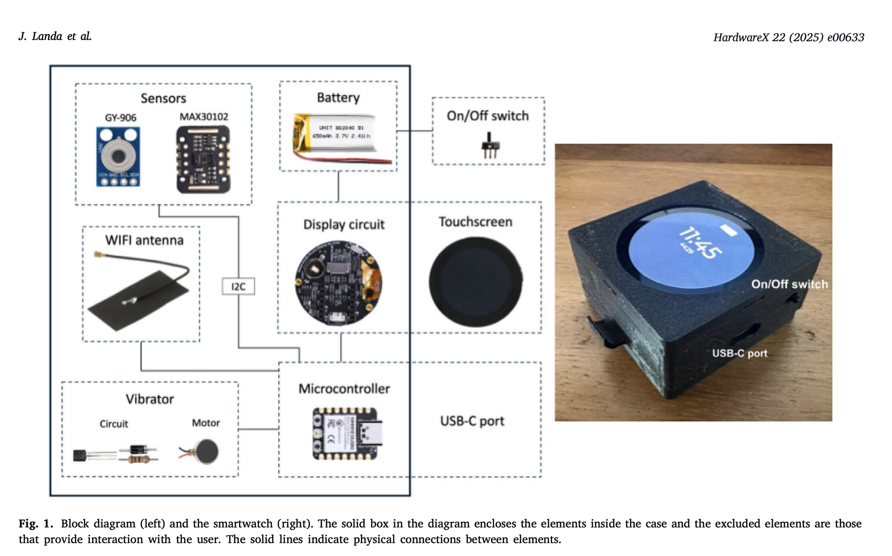
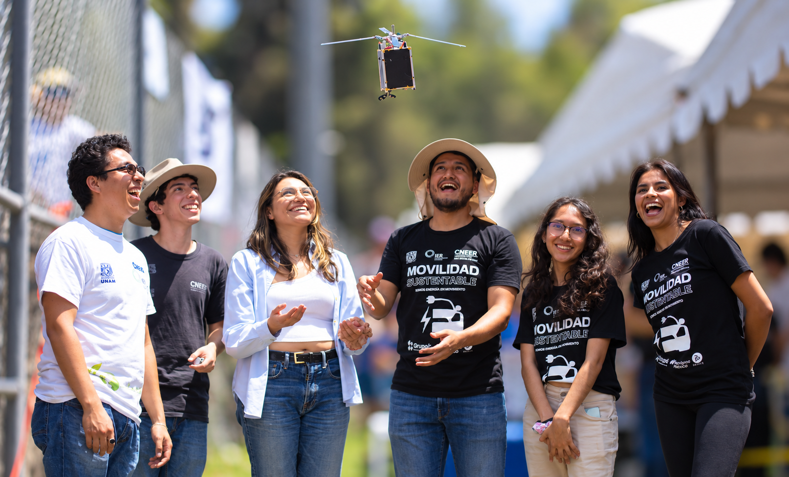

CNEER 2026 · Conferencia
Tendencias de la IA en la gestión energética de edificios
Gemelos digitales, control inteligente y agentes
Dr. Guillermo Barrios del Valle
Instituto de Energías Renovables, UNAM
gbv@ier.unam.mx
Los edificios consumen cerca de un tercio de la energía mundial; en el México cálido, el aire acondicionado domina el consumo y crece con cada ola de calor.
17–24 % menos HVAC con control por ocupación, medido en campo
24–58 % de ahorro de HVAC en hoteles, según sensor y clima
22–50 % menos electricidad y gas en oficinas pequeñas
La IA ayuda en ambos frentes: diseño bioclimático y operación. Esta charla se enfoca en operar.
Jung & Jazizadeh, Building and Environment (2019) · estudios LSU/PNNL de controles ocupante-céntricos · estudio experimental lado a lado (2023)
Réplica virtual de un sistema físico —un edificio— que se mantiene sincronizada con datos medidos y permite simular, predecir y optimizar su comportamiento.
Objeto físico El edificio real: envolvente, clima, ocupación y sus sistemas (HVAC, iluminación).
Modelo virtual Modelo térmico-energético calibrado: EnergyPlus, caja gris o aprendizaje automático.
Flujo de datos Sensores y BMS actualizan el modelo; el modelo retroalimenta la operación.
No es un render 3D ni una simulación estática: vive y se actualiza con el edificio.
La diferencia está en el flujo de datos entre el sistema físico y su modelo virtual.
Simulación
Físico ⇢ Virtual
Evalúa escenarios con datos de entrada fijos; toda actualización es manual.
Sombra digital
Físico → Virtual
Los datos medidos actualizan el modelo automáticamente, pero este no actúa sobre el edificio.
Gemelo digital
Físico ⇄ Virtual
Flujo bidireccional y automático: el modelo retroalimenta la operación del edificio.
Solo hay gemelo digital cuando el modelo actúa de vuelta sobre el sistema físico.
Sistema de IA que percibe su entorno, razona sobre un objetivo y actúa de forma autónoma usando herramientas.
1 · Percibe Lee sensores, clima, tarifas eléctricas y ocupación en tiempo real.
2 · Razona Planifica con LLM o control óptimo para cumplir metas de confort y energía.
3 · Actúa Ajusta consignas, acciona equipos y evalúa escenarios en el gemelo digital.
Juntos: el gemelo digital es el campo de pruebas; el agente, el operador autónomo.
Cada vez que ChatGPT o Claude busca en la web, ejecuta código o lee un archivo por ti, estás usando un agente. El mecanismo detrás se llama tool calling.
Petición → LLM → Herramienta → LLM → Respuesta
1 · Pide, no ejecuta El LLM emite una llamada estructurada (JSON): qué herramienta necesita y con qué argumentos.
2 · Algo determinista ejecuta Un programa corre la herramienta —con permisos y límites— y devuelve el resultado.
3 · El LLM cierra el lazo Interpreta el resultado y decide el siguiente paso, o redacta la respuesta final.
Recuerden este patrón: el LLM decide, un sistema determinista ejecuta. Así también se opera un edificio.
Sensores vestibles que miden fisiología continua sin interrumpir a la persona. El ejemplo que quizá ya conocen: Oura.

Qué mide Temperatura de piel cada minuto (0.13 °C), FC, HRV y SpO₂ — desde el dedo.
Por qué nos importa Justo las variables que piden los modelos de confort térmico personal.
El problema 349–499 USD + suscripción; los datos crudos viven en la nube del fabricante.
Medir el confort desde el cuerpo ya es tecnología de consumo. Falta hacerla abierta y barata.
Validación del fabricante: 92 % de acuerdo con un sensor de investigación en uso real · imagen: ouraring.com
Los tres conceptos, ensamblados: el wearable mide a la persona, el agente razona y actúa sobre el HVAC, y el gemelo digital es donde se entrena y prueba antes de tocar el edificio real.
Wearable + sensores → Agente LLM → HVAC → Edificio ⟲
Agente LLM ⇄ Gemelo digital
Ya funciona en la literatura Agentes de control entrenados dentro de gemelos digitales calibrados: 10–35 % menos demanda de HVAC manteniendo la temperatura en ±0.5 °C.
Ya es un campo propio Los agentes LLM para operación de HVAC y gestión energética tienen revisiones y surveys dedicados desde 2025.
Revisión gemelos digitales + LLMs en edificios (2025) · revisión crítica de LLMs para HVAC (arXiv:2609.05314) · survey en Energy & Buildings (2025)
El lazo ya existe en la literatura. Llevarlo a nuestras aulas, viviendas y edificios exige que cada pieza cumpla tres condiciones a la vez.
Barato Cientos de pesos por nodo, no decenas de miles: que un grupo, una escuela o una vivienda pueda tener varios.
Exacto Sensores calibrados contra una referencia y deriva controlada: datos que resisten la revisión por pares.
Libre Poder usar, estudiar, modificar y compartir cada pieza — sin suscripciones ni nubes ajenas.
El resto de la charla: construir este lazo sobre la mesa, con hardware de cientos de pesos y un LLM local.
Software cuya licencia garantiza cuatro libertades: usarlo, estudiarlo, modificarlo y compartirlo. El código fuente es público y la comunidad lo audita y lo mejora.
Ya lo usas a diario Linux (servidores, Android), Firefox, Python, R. La ciencia moderna corre sobre software libre.
En esta charla Ollama y los modelos abiertos, ESP-IDF y Arduino, Home Assistant, EnergyPlus — y Quarto, con el que está hecha esta presentación.
Por qué importa aquí Sin licencias por nodo ni nubes obligatorias: los datos y el control se quedan en el edificio.
Libre no significa solo gratis: significa control, transparencia y reproducibilidad.
Hardware cuyos diseños se publican —esquemáticos, PCB, lista de materiales, firmware— con licencias que permiten estudiarlo, modificarlo y fabricarlo.
El ecosistema Arduino lo popularizó; hoy existe certificación (OSHWA) y una revista científica dedicada: HardwareX.
El caso del ESP32 El chip es cerrado, pero su SDK es código abierto y los diseños de las placas son públicos — ecosistema abierto a ~100–350 MXN.
Para la ciencia Un instrumento abierto se puede replicar en otro laboratorio, auditar y reparar — y publicar como artículo.
La base de la instrumentación científica barata — y de todo el hardware de esta charla.
Microcontrolador con Wi-Fi de 100–350 pesos, el estándar de facto del IoT abierto. Con TinyML maduro, pone los sentidos y las manos del agente en el edificio.
Sentidos Temperatura y humedad (±0.2 °C), CO₂, presencia por radar mmWave, corriente eléctrica, vibración y sonido — sensores de decenas a cientos de pesos.
Reflejos (TinyML) Modelos de < 100 kB corriendo dentro del chip: ocupación, desagregación de consumo (NILM), detección de fallas de HVAC por vibración.
Manos Control IR del minisplit (casi cualquier marca), relés y actuadores — siempre con límites deterministas en el firmware.
Un nodo completo de sensado + inferencia + actuación cuesta menos que una visita técnica.
Un LLM sí corre en un ESP32… en miniatura: de 0.26 a 29 millones de parámetros, a 10–22 tokens/s. Reales, pero de juguete o de dominio cerrado.
Dentro del chip Generación de texto (260 mil parámetros, ~20 tok/s) y expertos de dominio cerrado (9–29 M). Sin conocimiento general ni buen español.
El patrón productivo Híbrido: palabra de activación y actuación en el MCU; conversación y razonamiento en un LLM local (Ollama), por serial, MQTT o MCP.
Regla práctica Lo determinista y la seguridad, al firmware. El lenguaje y el razonamiento, al servidor local. La nube: opcional.
El chip no es el cerebro: es el cuerpo con reflejos. El cerebro es un LLM local — y lo vamos a ver.
En vivo
Un ESP32 conectado por USB a esta laptop. Tres peldaños: de juguete a operador del edificio.
1 · Stories Un transformer de 260 mil parámetros generando cuentos dentro del chip, a ~20 tokens por segundo. Puede computar.
2 · El barista 8.9 millones de parámetros, experto en espresso, 100 % offline en el ESP32. Puede saber de un dominio.
3 · El operador de color Un LLM local (Ollama) enciende, apaga y colorea el LED del ESP32 por tool calling; el firmware valida cada orden. Puede operar.
La tercera es el patrón completo: el LLM decide, el firmware ejecuta — hoy un LED, mañana el minisplit. Vamos a la terminal →
Para investigar y controlar necesitamos lo que el anillo no da: datos crudos, locales y baratos.
Cerrado Oura, Whoop, Apple Watch: excelente fisiología, pero datos en la nube del fabricante y suscripciones.
Intermedio Cozie: app abierta de encuestas de confort que corre sobre Apple Watch y Fitbit.
Abierto — hecho en el IER Smartwatch en HardwareX 2025: XIAO ESP32C3, temperatura de piel + FC + encuestas horarias de confort. 49 USD, GPLv3.
Los modelos personales ahorran ~30 % de HVAC (hasta 45 % en verano) — y el wearable transmite la preferencia, no la fisiología.
HardwareX 2025 (DOI 10.1016/j.ohx.2025.e00633) · Tartarini et al., Indoor Air (2022): F1 ≈ 0.78 con ~300 votos · pulsera de 3 puntos: 93.9 % para control HVAC (KIST)
Publicado en HardwareX (Landa et al., 2025): XIAO ESP32C3, temperatura de piel (GY-906), pulso (MAX30102), pantalla táctil redonda y vibrador — ~49 USD, licencia GPLv3.

Encuestas de confort cada hora + fisiología: los datos para modelos de confort adaptativo — y cualquier laboratorio puede replicarlo.
Landa et al., HardwareX 22 (2025) e00633 · DOI 10.1016/j.ohx.2025.e00633 · imagen: Fig. 1 del artículo
Todas las piezas existen y son abiertas. Falta ensamblarlas aquí: con nuestros climas, nuestras tarifas y nuestra vivienda.
Wearable abierto → Nodos ESP32 ⇄ LLM local ⇄ Gemelo digital → HVAC
Datos abiertos No hay conjuntos medidos de confort, consumo y ocupación en vivienda cálida mexicana. Quien los publique, define el campo.
Voz en español ESP-SR no tiene palabras de activación ni comandos en español de primera clase. Contribución directa a la comunidad global.
Comunidad No hay nodo mexicano en TinyML4D. Docencia con EnergyPlus/OpenStudio + hardware de cientos de pesos.
El LLM decide, el firmware valida, el ocupante manda. · gbv@ier.unam.mx
Programación, terminal, electrónica, datos, documentación, cultura libre: habilidades especializadas que piden una motivación especial — un posgrado… o un buen proyecto en equipo.

Un CanSat —construir, programar y lanzar un satélite tamaño lata— ejercita todo. Participen. · gbv@ier.unam.mx
Imagen: concurso CanSat · CNEER / IER-UNAM
CNEER 2026 · Tendencias de la IA en la gestión energética de edificios